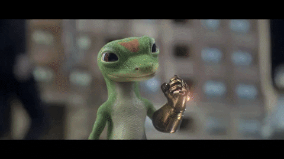
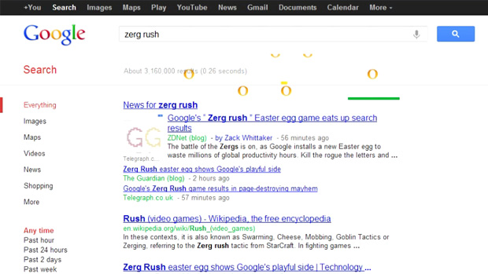
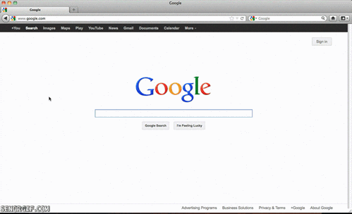

Porque fizeram esse jogo no Google?
Zerg Rush é um minigame adicionado pelo Google em sua lista de Easter Eggs em 27 de abril de 2012.
 |
Como Iniciar O Jogo Zerg Rush:
- Passo 1: Vá até a página do Google e faça uma busca tradicional pelo termo Zerg Rush;- Passo 2: O jogo começará a carregar assim que a busca for feita, mesmo que você não perceba. Logo, várias letras O nas cores vermelha e amarela começarão a atacar seus resultados de busca, elas são os inimigos, representando a raça Zerg;  - Passo 3: Para combatê-las, basta clicar com o botão esquerdo do mouse nelas, como em um jogo de tiro ao alvo. Cada letra precisa de 3 cliques para ser destruída e uma barra de energia sobre elas indica quantos cliques faltam. Cuidado, pois elas podem vir de todas as direções, até mesmo sendo necessário usar a barra de rolagem; - Passo 4: Os seus resultados de busca funciona como uma base, e eles serão atacados pelas letras O. Seu objetivo é proteger suas bases enquanto elimina os inimigos. Não se preocupe de clicar nos links, eles não funcionam durante o jogo.  Objetivos e comandos do jogo
Seu objetivo é destruir todos "O" clicando neles,
além de ter que impedir que eles destruam suas barras de pesquisa.Você pode usar o mouse, movimentando-o para o lado desejado. Ao final da partida, as letras formarão um GG gigante, sigla de Good Game. Há ainda o botão Share score, caso você queira compartilhar sua pontuação. |